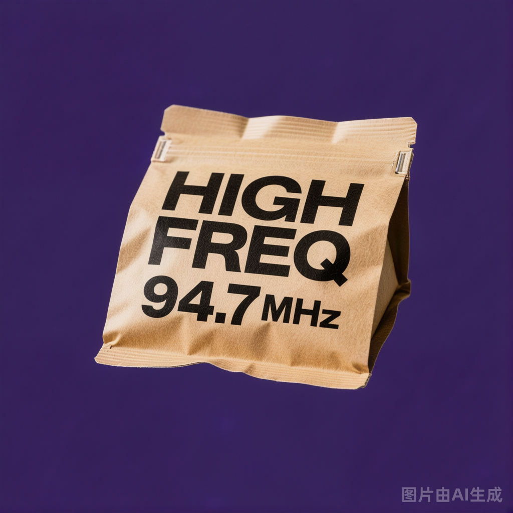
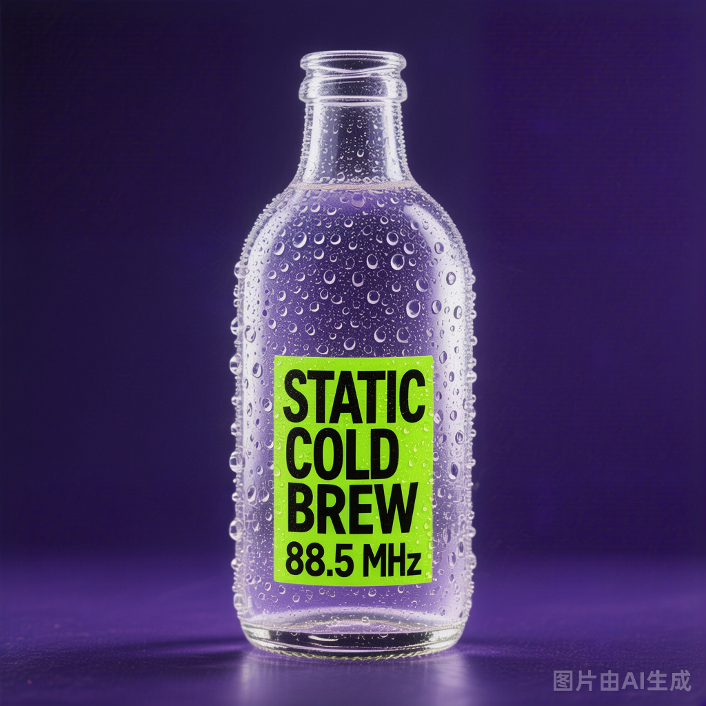
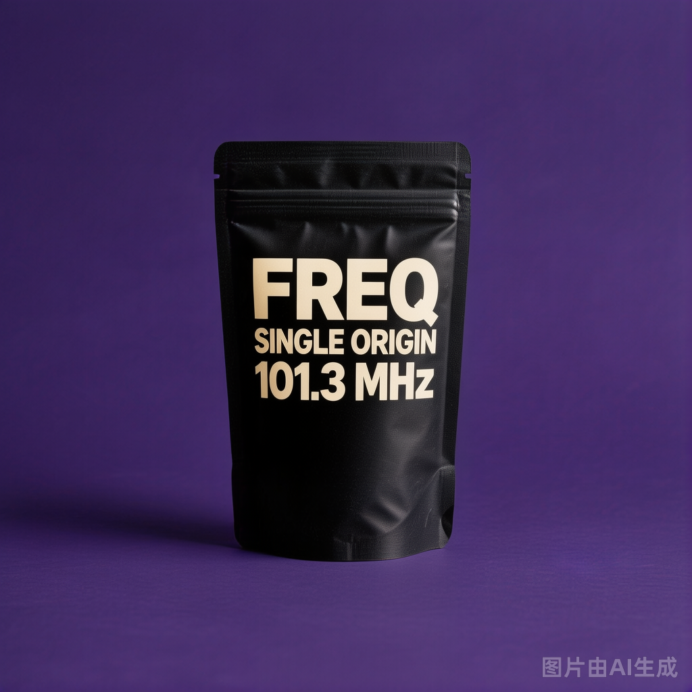
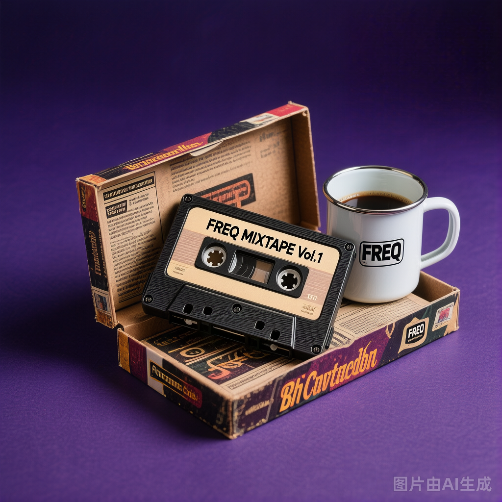

HIGH FREQ.
ESPRESSO
高频意式
中烘 · 焦糖、奶油、平衡 Medium roast · caramel, cream, balanced
← 拖动调频 → ← DRAG TO TUNE →
招牌饮品
门店每日现做的 6 款经典，从高频到低频，覆盖一整天的频段。 Six daily classics, hand-crafted in store. From high-band to low-band, all day long.
高频意式
中波拿铁
低频手冲
静电冷萃
调幅澳白
夜频摩卡
带回家
把整个频段带回家——挂耳、瓶装冷萃、整袋豆与卡带周边。 Take the whole band home — drip packs, cold brew bottles, beans and cassette merch.

挂耳系列
6 频段口味组合一盒装，单包独立锁鲜，从高频明亮到低频厚重一次集齐。 Six bands in one box. Individually sealed, from bright high-band to deep low-band.

冷萃瓶装
单一产区限定瓶装冷萃，250ml 玻璃瓶，冷链直达，48 小时内最佳风味。 Single-origin cold brew, 250ml glass bottle, cold-chain delivered for peak flavor.

精选豆单
200g 整袋豆单，每袋附烘焙日期与频段标签，浅烘高频到深烘低频。 200g bagged beans with roast date and band label, from light high-band to dark low-band.

卡带周边
陶瓷杯、印花 T、帆布袋。把上世纪卡带美学拆开，重组成日常物件。 Mugs, tees and totes. Last century's cassette aesthetic, rebuilt for everyday use.
品牌主张
频率从来不是一个固定的数字。它是早晨第一杯醒脑的高频，也是深夜独处时的低频。它是地铁里耳机里的中波，也是周末散步时的静电。FREQ. 不教你"正确的咖啡"，我们让你听见自己今天该喝的那一频。复古不是怀旧——是把上世纪工业美学拆开，重组成此刻的潮流语言。调到你这一频。
A frequency was never a fixed number. It's the high band of your first morning sip, and the low band of a quiet midnight. It's the AM in your subway commute, the static in your weekend walk. FREQ. doesn't teach you "the right coffee" — we help you hear the one you need today. Retro isn't nostalgia. It's the industrial aesthetic of the last century, taken apart and rebuilt for now. Tune in to your frequency.
门店
每家门店都是一台独立的收音机。选一个频率，去那里。 Each spot is its own radio. Pick a frequency and go.
上海徐汇 · 永嘉路
上海市徐汇区永嘉路 218 号 218 Yongjia Rd, Xuhui, Shanghai 218 Yongjia Rd, Xuhui, SH
深圳南山 · 科技园南区
深圳市南山区科技园南区 8 栋 Bldg 8, Tech Park South, Nanshan, Shenzhen Bldg 8, Tech Park South, SZ
杭州西湖 · 天目里
杭州市西湖区天目山路 398 号 398 Tianmushan Rd, Xihu, Hangzhou 398 Tianmushan Rd, Xihu, HZ
成都锦江 · 太古里
成都市锦江区中纱帽街 8 号 8 Zhongshamao St, Jinjiang, Chengdu 8 Zhongshamao St, Jinjiang, CD
持续在线
新品频率第一时间通知。
限定豆单、季节饮品、门店开业。
Be the first to know our new frequencies.
Limited beans, seasonal drinks, new spots.